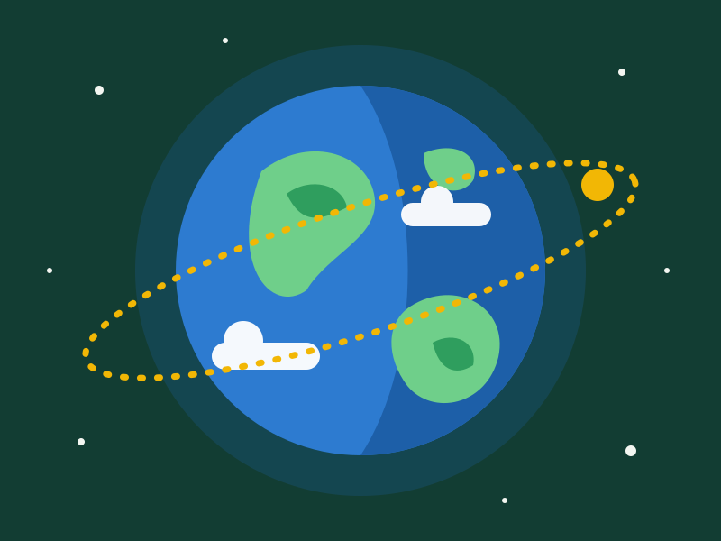

Rafaela de Souza Tavares
Estudante de Análise e Desenvolvimento de Sistemas na Universidade Positivo.
Conheça a ideia, os objetivos e a equipe por trás do Vida Sustentável.

O Vida Sustentável nasceu como projeto da disciplina Desenvolvimento Front-End para Web. A proposta é reunir, em um só lugar, informações simples e ferramentas práticas para quem quer adotar hábitos mais sustentáveis sem complicação.
Cada página trata de um tema do cotidiano: reciclagem, energia, água e consumo consciente. Há calculadoras, tabelas, galeria, vídeo, áudio e um checklist que guarda seu progresso no próprio navegador.
Estudante de Análise e Desenvolvimento de Sistemas na Universidade Positivo.
Estudante de Análise e Desenvolvimento de Sistemas na Universidade Positivo.